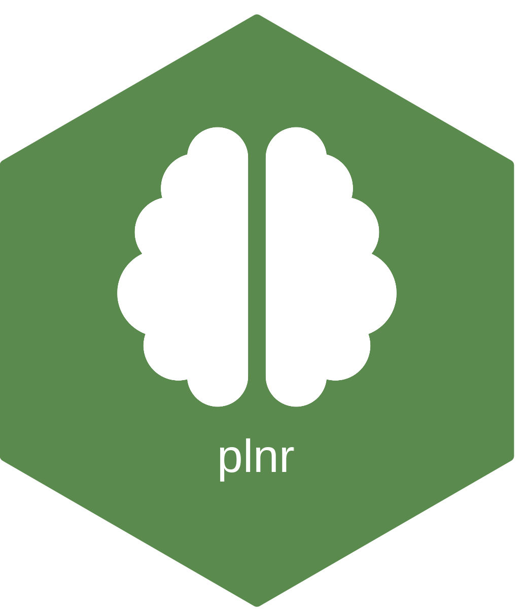

Package index
-
Plan - R6 Class for Planning and Executing Analyses
-
expand_list() - Create a cross product of lists
-
get_anything() - Get objects with package namespace support
-
is_run_directly() - Check whether code runs directly, or from within a function
-
set_opts() - Set package configuration options
-
try_again() - Retry code execution with a random delay between attempts
-
create_rmarkdown() - Create an example R Markdown project structure
-
example_action_fn() - Example action function that shows the analysis structure
-
example_data_fn_nor_covid19_cases_by_time_location() - An example data_fn that returns a data set
-
nor_covid19_cases_by_time_location - Covid-19 data for PCR-confirmed cases in Norway (nation and county)
-
test_action_fn() - Test action function that returns a constant value